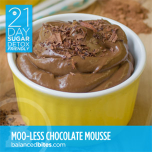

Our great-grandmothers didn’t need nutrition lessons—then again, they weren’t forced to wade through aisle after aisle of packaged foods touting outlandish health claims and confusing marketing jargon. Over the last few decades, we’ve forgotten what “real food” is—and we’re left desperately seeking foods that will truly nourish our bodies. We’re disillusioned with the “conventional wisdom” for good reason—it’s gotten us nowhere.
Achieving optimal health without calorie-counting, diet foods, or feelings of deprivation has never been easier. Practical Paleo explains why avoiding both processed foods and foods marketed as “healthy”—like grains, legumes, and pasteurized dairy—will improve how you look and feel and lead to lasting weight loss. Even better—you may reduce or completely eliminate symptoms associated with common health disorders!
Practical Paleo is jam-packed with over 120 easy recipes, all with special notes about common food allergens including nightshades and FODMAPs. Meal plans are also included, and are designed specifically to support:
Practical Paleo is the resource you’ll reach for again and again, whether you’re looking for information on healthy living, delicious recipes, or easy-to-understand answers to your questions about how a Paleo lifestyle can benefit you, your family, and your friends.
Order Practical Paleo on Amazon – or grab a copy in a book store near you.
Grain-free • Gluten-free • Dairy-free • Sugar-free • Nut-free • Nightshade-free • 21DSD
PREP TIME: 10 minutes – COOKING TIME: n/a – YIELD: 2 servings
Don't forget to check also check out The 21 Day Sugar Detox
Diane Sanfilippo, BS, NC is a Holistic Nutritionist specializing in Paleo nutrition, blood sugar regulation, food allergies, intolerances and digestive health. She has created this [Balanced Bites] website to give you a basic tour point from which to get acquainted with her philosophy and the educational materials.